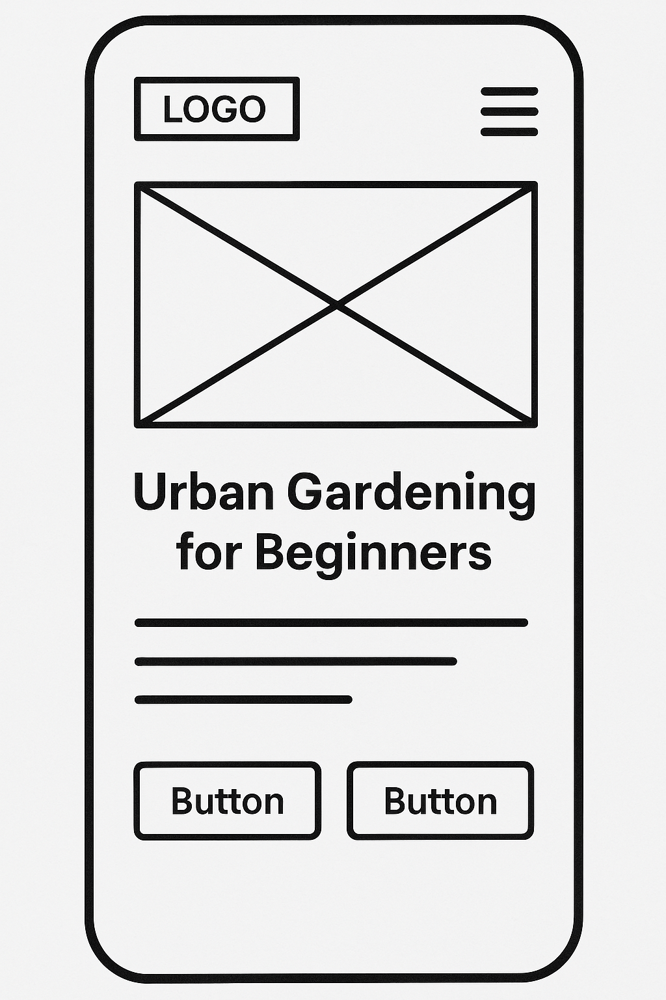
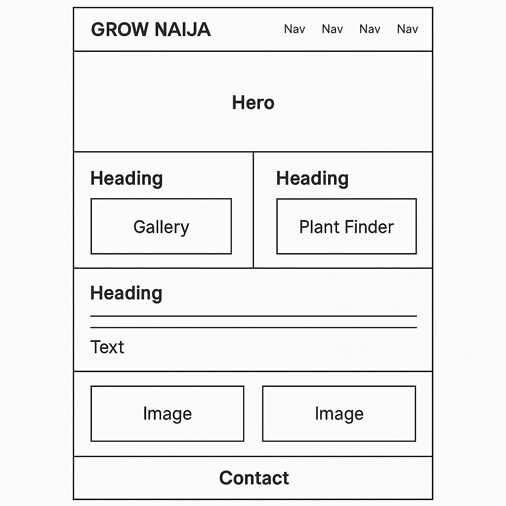

Grow Naija - Urban Gardening
Grow Naija is a beginner-friendly urban gardening website tailored to Nigerians. Its memorable, culturally relevant, and promotes a movement for self-reliance and sustainability.
Site Purpose
Grow Naija site provides beginner-friendly gardening guides, tools, and tips for Nigerians in urban areas. The goal is to help users start their own gardens in small spaces using simple materials, improve food independence, and build a community of local growers.
Scenarios
- "I live in Lagos and only have a balcony. What plants can I grow that wont die easily?"
- "Where can I buy cheap gardening tools or soil in Nigeria?"
Color Scheme
- Green (#4CAF50): Used for headings, buttons, and accent elements.
- Cream (#FAF9F6): Used for background to provide a soft, natural feel.
- Dark Brown (#3E2723): Used for body text to ensure readability and earthy vibe.
Typography
- Poppins (sans-serif): For headings and titles - clean and friendly.
- Open Sans (sans-serif): For body text - highly readable and modern.
- Pacifico (optional): For logo/slogan or special display areas.
Wireframes
Mobile View (Portrait)
Layout includes a header, navigation icon, hero image, featured guides, and buttons for plant quiz and gallery.

Desktop View
Wide layout includes navigation bar, hero section, guides, interactive quiz, gallery, and contact/footer links.
